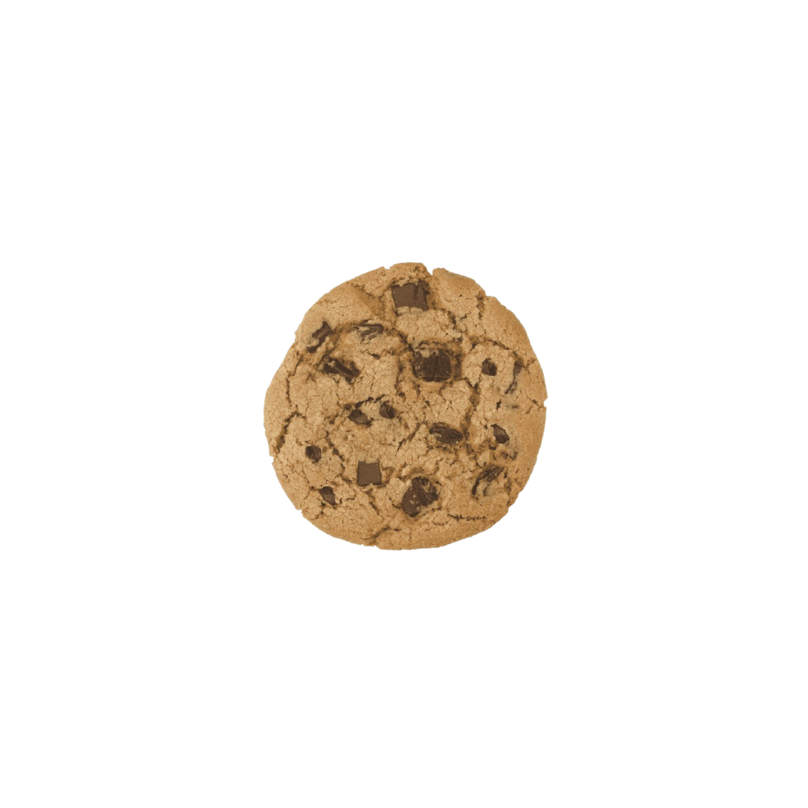

COOKIE CLICKER SENA
Inicia
0
SENA

Actualización
VERSIÓN PRE-ALPHA 0.3
- Se cambio el diseño de la galleta
- Se añadio logo
- Se corrigio sistema de multiplicadores
- Se añadio sistema de fases
- Se añadieron las siguientes fases: mini, base, kaioken, false super cookie